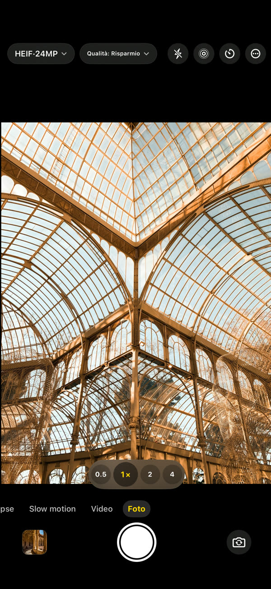
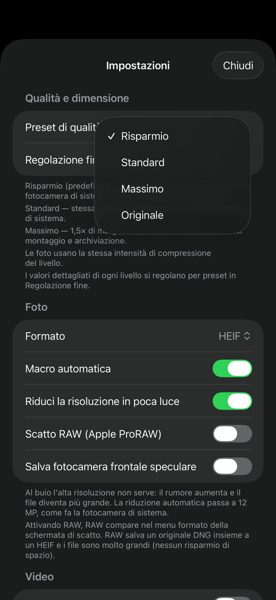
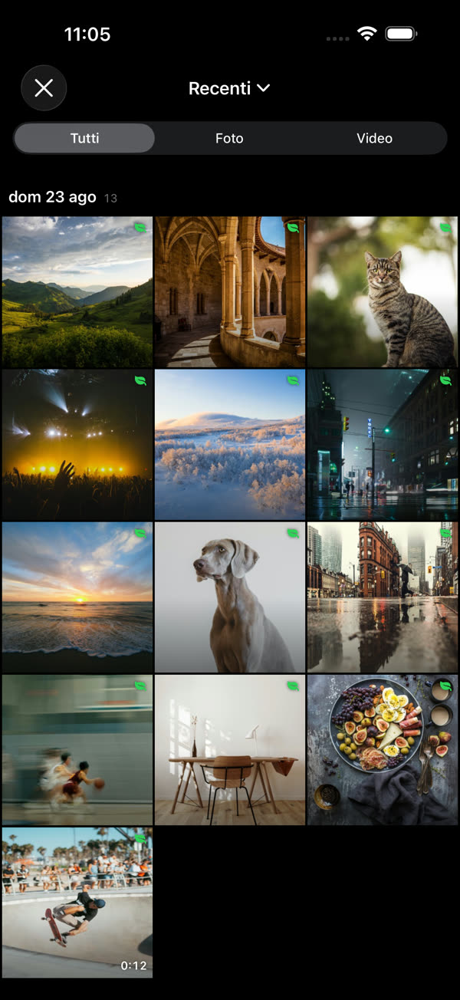
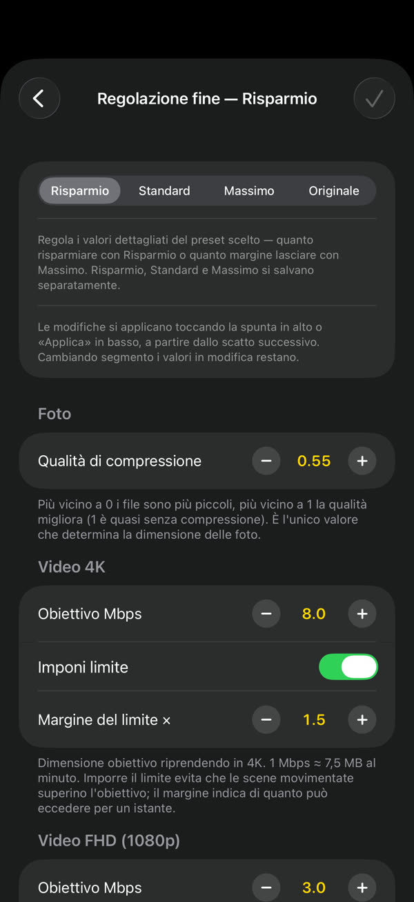
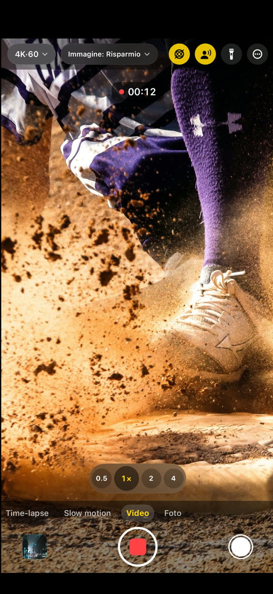

GramCamera
Stessa scena, file più piccolo.
GramCamera scatta come la fotocamera di sistema, ma salva file più leggeri. Riduce le dimensioni senza un calo visibile di qualità: lo stesso spazio dura molto di più.
Scarica su App StoreiOS 17 o successivo · iPhone e iPad

A ogni scatto, circa il 60% di spazio in meno.
Foto3,7 MB → 1,5 MBcirca 60%
Video 4K169 MB → 60 MB / min64%
Video FHD60 MB → 23 MB / min62%
Scegli, scatta, guarda quanto risparmi.




Tutto quello che serve, già dentro.
Decidi tu quanto risparmiare
Risparmio, Standard o Massimo. La regolazione fine imposta la dimensione obiettivo per risoluzione
Direttamente in Foto
Nessuna libreria separata. Gli scatti vanno nell'app Foto di sistema
Il risparmio si vede
Ogni scatto mostra quanto è più piccolo rispetto alla fotocamera di sistema
Una fotocamera vera
Foto, video, slow motion, time-lapse, 4K 60 fps, video HDR, audio spaziale, obiettivi e macro
Resta sul dispositivo
Gli scatti restano sul dispositivo e nella tua libreria. Nessun account, nessun accesso — Privacy